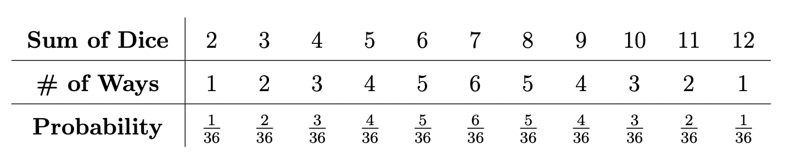

October 10: Let’s Make a Tic-Tac-Deal!
Puzzle
The game of Tic-Tac-Deal 2.0 has a 3-by-3 square grid with the numbers 3 through 11, arranged as follows:
\begin{align*} 3\;\;\;\;4\;\;\;\;5\; \\ 6\;\;\;\;7\;\;\;\;8\; \\ 9\;\;\;10\;\;\;11 \end{align*}You start by rolling a standard pair of six-sided dice and add the two numbers rolled. You place an X on the board on the square that contains the sum. If the sum is a $2$ or $12$, or if you roll a sum that you have previously rolled, then your roll is wasted.
If you have exactly three rolls of the dice, what are your chances of getting three Xs in a row (either horizontally, vertically, or diagonally)?
Solution
Let's look at the probability of rolling each summed numbers from the two dice:
Looking at the grid, we see that the only ways to win within three rolls is to roll one of the following triplets of numbers (in any order), and their probabilities are shown:
\begin{align*} \text{Horizontal Win}=\begin{cases} (3,4,5): & 3!\frac{2\cdot 3\cdot4}{36^3}=3!\frac{24}{36^3} \\ (6,7,8): & 3!\frac{5\cdot 6\cdot5}{36^3}=3!\frac{150}{36^3} \\ (9,10,11): & 3!\frac{4\cdot 3\cdot2}{36^3}=3!\frac{24}{36^3} \end{cases} & & \text{Vertical Win}=\begin{cases} (3,6,9): & 3!\frac{2\cdot 5\cdot4}{36^3}=3!\frac{40}{36^3} \\ (4,7,10): & 3!\frac{3\cdot 6\cdot3}{36^3}=3!\frac{54}{36^3} \\ (5,8,11): & 3!\frac{4\cdot 5\cdot2}{36^3}=3!\frac{40}{36^3} \end{cases} \end{align*} $$\text{Diagonal Win}=\begin{cases} (3,7,11): & 3!\frac{2\cdot 6\cdot2}{36^3}=3!\frac{24}{36^3} \\ (5,7,9): & 3!\frac{4\cdot 6\cdot4}{36^3}=3!\frac{96}{36^3} \end{cases}$$And the so the probability of winning in three rolls is just:
$$\mathbb{P}(\text{Win})=3!\frac{24+150+24+40+54+40+24+96}{36^3}=\boxed{\frac{113}{1944}}$$